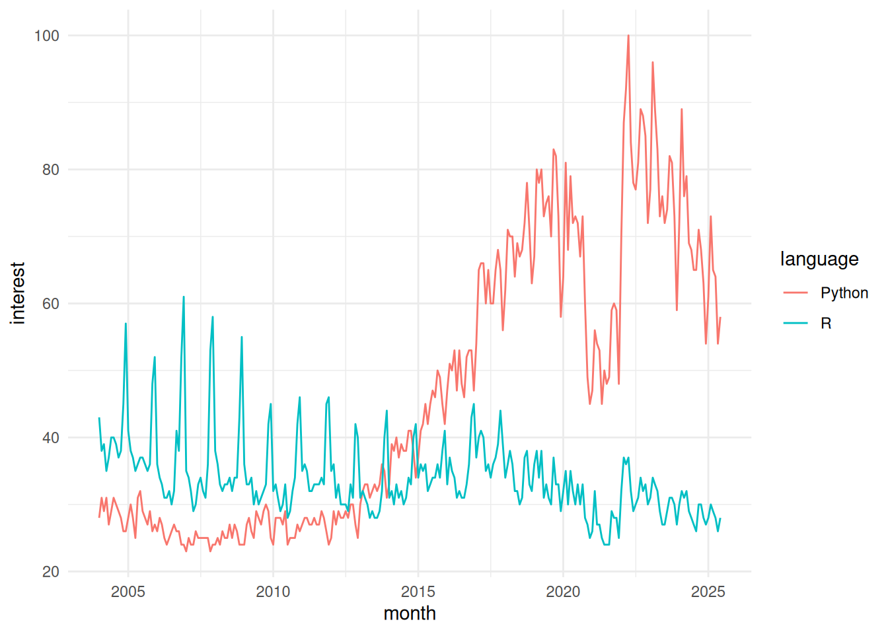

1 About R
Imagine you’ve just gotten back a spreadsheet with expression values for 20,000 genes across 100 samples, and your advisor wants to know which genes differ between treated and untreated cells — by Friday. Clicking through that by hand is hopeless. This is exactly the kind of problem R was built for: load the data, filter and reshape it, run the statistics, and draw a publication-quality figure, all in a handful of lines you can save, rerun, and share.
This chapter is the gentlest possible start. We won’t write much code yet. Instead, we’ll answer two questions that matter before you type a single command: what is R, and why is it worth your time as a biologist? Once you’re convinced it’s worth learning, the next chapter gets you set up with RStudio and your first commands.
1.1 What you’ll learn
- Describe what R is and where it came from, in plain language.
- Explain why R is so widely used in genomics and bioinformatics.
- Recognize the trade-offs — the things R is not good at — so you know when to reach for another tool.
- Understand what “open source” means and why it matters for reproducible science.
1.2 What is R?
R is a programming language and free software environment built for working with data: cleaning it, analyzing it, modeling it, and turning it into graphics. You write short instructions, R carries them out, and you see the results immediately. That’s the whole loop.
R didn’t appear out of nowhere. It’s a dialect of an older language called S, developed in the 1970s at Bell Laboratories. The first version of R was written by Robert Gentleman and Ross Ihaka and released in 1995 (Ihaka’s own slide deck tells the story well). Since then a volunteer group called the R Core Team — statisticians and computer scientists — has maintained and improved it, releasing a new version roughly every year. So when you use R, you’re standing on three decades of careful work, and you’re not paying a cent for it.
R has become especially popular in genomics and bioinformatics, and that popularity has held up over time even as other languages have risen alongside it (Figure 1.1).

The figure plots search interest for R and Python over the years. Python is the more general-purpose language and gets more total searches, but don’t read too much into that: a search-popularity chart can’t see which communities depend on which tool. In bioinformatics specifically — think Bioconductor, the ecosystem this book leans on heavily — R remains a first-class citizen, and that’s a big part of why we teach it here.
1.3 Why use R?
So why has R earned such a devoted following among biologists and data scientists? A few reasons stand out.
It’s free and open source. R costs nothing to download, use, modify, or share, and a large worldwide community keeps building it. We’ll come back to what “open source” really means in the section on R’s license below.
There’s a package for almost everything. Thousands of add-on packages extend R’s reach, including a deep catalogue of tools written specifically for genomics and bioinformatics. Many have been tested by thousands of users — and, like R itself, they’re free.
It’s built for wrangling messy data. Real biological data arrives messy. R gives you powerful, well-worn tools to clean, reshape, and summarize even large datasets — not always easy, but reliably possible.
The graphics are publication quality. R’s plotting tools produce figures you can drop straight into a paper or poster, and you can tune nearly every detail to say exactly what you mean.
Your work is reproducible. Because an R analysis is a script — a written record of every step — you (or a colleague, or a reviewer) can rerun it and get the same answer. Point-and-click tools rarely leave that kind of trail.
It runs everywhere and scales. R works on Windows, Mac, and Linux, and it can talk to other languages like FORTRAN and C when you need extra speed. The same code serves a quick afternoon analysis or a major project.
That last point is worth a concrete example. I can write and test an analysis on my Mac laptop, then install the exact same code on our 20,000-core compute cluster and run it in parallel across a hundred samples, watch the jobs as they go, and have R write the results into a database when it finishes. One language carried me from a back-of-the-envelope idea to a full-scale genomics pipeline without rewriting anything.
“Open source” means the program’s underlying code is published for anyone to read, change, and redistribute. For science that’s not a nicety — it’s what lets others inspect exactly how a result was produced and verify it for themselves. R, and the Bioconductor packages you’ll meet later, are open source top to bottom.
1.4 Why not use R?
No tool is perfect, and it’s healthier to know R’s rough edges going in than to be blindsided by them later. R is not always the best tool for every job. It can be slower than languages like C for certain heavy number-crunching, and its documentation can be terse or assume more than a beginner knows. Some community-contributed packages are excellent; others are unmaintained or buggy, so a little judgment helps when you pick one. R also has no single, polished point-and-click interface — that’s a feature for reproducibility, but it does mean you commit to writing code. And other languages, notably Python, Julia, and Rust, are increasingly used in biological data science, so R is one strong choice among several rather than the only one.
You’ll hear people joke that R doesn’t hold your hand; sometimes it slaps it instead, with a cryptic error message. Here’s the reassuring truth: every R user, including experienced ones, sees errors constantly. An error is not a verdict on you. It’s just R saying “I didn’t understand that,” and the fix is usually a typo, a missing comma, or a quick web search away. We’ll return to reading errors calmly in later chapters — for now, just know that getting stuck is normal and temporary.
1.5 R license and the open source ideal
R is free — genuinely, completely free — and distributed under the GNU General Public License. Among other things, that license lets anyone:
- Download the source code.
- Modify it however they like.
- Redistribute the modified code (even for money), as long as it stays under the same GNU license.
That last condition is the clever part: improvements have to flow back to the community on the same open terms. The practical upshot for you is reassuring — R will always be available, will always be open, and can keep growing without being locked behind a paywall or controlled by a single company.
1.6 Where this is going
R is a programming language, which means you get things done by writing code rather than clicking buttons. That can feel intimidating at first, but it’s also the source of everything we just praised: scripts you can rerun, functions you can reuse, and analyses you can share. You can work with R two ways — interactively, typing one command at a time and seeing each result right away, or as a script, saving a whole sequence of commands to run together. You’ll use both.
In the next chapter, on RStudio, we’ll install RStudio — a friendly home base for writing and running R — and take a tour of its panels. The chapter after that gets you up and running with your first real R code, where you’ll build a pair of virtual dice and roll them.
You don’t need anything installed to look ahead: open the Google Trends page behind Figure 1.1 and add a third language to the comparison. It’s a gentle reminder that the tools you choose are part of a living, shifting community.
1.7 Summary
You now have the lay of the land. R is a free, open-source language with three decades of history, a vast library of packages, strong graphics, and a deep commitment to reproducibility — which is exactly why it’s a mainstay of genomics and bioinformatics. You also know its limits: it can be slow for some tasks, its error messages can sting, and it’s one good option among several. With the “why” settled, you’re ready to set up the tools and start writing code.
1.8 Reflection
Take a moment to check your understanding before moving on. You don’t need to write anything down — just see whether you can answer each in a sentence or two.
- In your own words, what does it mean that R is “open source,” and why does that matter for a published scientific result?
- Name two reasons a biologist might choose R over a point-and-click spreadsheet program for analyzing experimental data.
- The Google Trends figure shows Python with more overall search interest than R. Why is that not a good reason to conclude R is unimportant in bioinformatics?
- What is one situation where R might not be the best tool, and what would you consider reaching for instead?